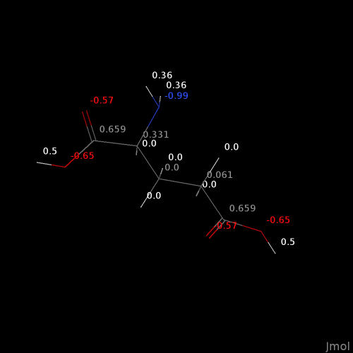

load=1crn2 Aminoácidos
2.1 Estrutura
Existem centenas de aminoácidos, principalmente em solos e microorganismos, embora apenas 20 desses possam participar do código genético para a tradução em proteínas.
Afim de iniciar a observação de alguns desses aminoácidos, baixe a estrutura da Glicina por um arquivo salvo no HD como “gly.png” ou por File, Get Mol (e digitando gly em seguida). Observe os grupos amino e carboxilato na coloração CPK. Identifique a estrutura do aminoácido:
Qual a cadeia lateral de Gly ?
E o esqueleto carbônico ?
Observe que a glicina apresenta um código de cores formal (CPK, Corey, Pauling, Koltun) para carbono (cinza), nitrogênio (azul), fósforo ou enxofre (amarelo), e hidrogênio (branco). Diversas estruturas poliméricas, contudo, são carregadas sem a presença do átomo de hidrogênio. Para exemplificar, carregue a estrutura da proteína vegetal crambina, mas desta vez utilizando o Console do Jmol (File,Console):
Observe que os átomos de hidrogênio não são apresentados na estrutura. Para que o sejam, é necessário configurar o Jmol pela janela do Console:
set pdbAddHydrogensDeverá aparecer a mensagem pdbAddHydrogens = true. Agora você poderá visualizar os átomos de hidrogênio da crambina, carregando-a novamente.
Para sequências de comandos mais amplas, pode-se utilizar o Editor do Jmol, ao invés do Console. O Editor permite inserir os comandos linha a linha, e com comentários explicativos para cada. Para isto, basta clicar em Editor no próprio Console. Uma vez aberta a janela, pode-se compor uma sequência de comandos ou colar uma previamente elaborada.
Exemplificando-se, o trecho de código a seguir carrega o aminoácido Glutamato, calcula sua carga parcial, e o renderiza em varetas apresentando os valores das cargas. Para “rodá-lo”, basta copiar e colar no Editor aberto:
# Script para observações do aminoácido Glutamato:
load $glu # carregamento de micromolécula (veja que o sinal de igualdade reporta-se a macromoléculas de atributo PDB, e não à micromoléculas - $; e veja também que um aminoácido pode ser carregado digitando-se sua abreviação de 3 letras)
calculate partialcharge # carga parcial
wireframe only # renderização exclusiva de varetas
label %P
# etiquetagem de cargas parciais nos átomosComo já mencionado, não é necessário possuir o Jmol instalado ou o diretório do Jmol e seu executável em Java no computador. O programa pode ser acessado por applets encontrados em diversos sites da internete, como por exemplo:
Os links abaixo levam à algumas páginas da internete que permitem acesso remoto ao JSmol:
St. Olaf College - Jmol & JSmol (applet direto para JSmol) - interface com alguns comandos em botões.
St. Olaf College 2 - interface mais elaborada, com diversos exemplos, botões e comandos por hiperlink.
IZA-SC - Comissão de Estruturas de Valência (ES) - interface bem simplificada.
Para “rodar” o script anterior, por exemplo,
- Entre no site St. Olaf College - Jmol & JSmol);
- Inicie o Console (canto inferior esquerdo da tela);
- Copie o script acima e cole-o no Console.
Alternativamente, ao invés de copiar/colar algum trecho de código, o Jmol torna possível o carregamento do script, desde que previamente salvo com atributo spt (para script). Na verdade, o script pode ser salvo em qualquer editor de texto simples, mantendo esse atributo spt.
A imagem abaixo ilustra o resultado do script para o glutamato.

Para exportar imagens criadas no Jmol, basta seguir o Menu, ou o comando abaixo digitado no Console do programa standalone ou pelo link do JSmol:
write glutamato_cargas.jpg # também são possíveis atributos png e pdf2.2 JSmol - Um Applet Para Exibição do Jmol Em Navegadores de Internete
Entre as vantagens do emprego do Jmol para visualização de modelos moleculares elenca-se a possibilidade já mencionada de uso do programa pela internet, sem necessidade de instalação local (PC). Essa flexiblidade é garantida por auxílio de um applet desenvolvido em HTML5, JSmol, que compila o Jmol por JavaScript, ao invés de JAVA. Dessa forma não há necessidade nem do Jmol e tampouco de JAVA instalados localmente.
Para facilitar o estudo de modelos moleculares neste material, esse os capítulos subsequentes incluirão um link denominado JSmol para acesso a uma nova aba de exibição integrada ao applet, apresentando uma molécula de água e o Console pra scriptagem, tal como segue:

Alternativamente, modelos moleculares serão também disponibilizados como applet JSmol na mesma página de conteúdos quando conveniente, como por exemplo, a molécula de glutamato:
Dessa forma, basta clicar com o botão direito do mouse em qualquer área da janela aberta do “JSmol”, e selecionar algum ítem de Menu ou utilizar o Console, da mesma forma que para o programa standalone instalado localmente no PC.
Outras estruturas de aminoácidos podem elencar os diversos grupos (alifático e aromático apolares, bem como polares neutros, básicos e ácidos), tal como segue:
Demais aminoácidos podem ser carregados online em File, Get Mol no aplicativo instalado, ou pelo Console, nesse caso:
load $nome do aminoácido ou sua abreviação de 3 letrasExistem diversos sites de internete para estudo de biomoléculas com auxílio do JSmol, incluindo aminoácidos. Como exemplo, a Seção de Moléculas Interativas desenvolvida pelo Depto. de Patologia Clínica Veterinária da UFRGS.
2.3 Derivados Metabólicos
Com a janela do Jmol local ou da internete (JSmol), carregue o arquivo gaba a partir do Menu ou do Console (load $gaba) e posicione-o para que fique parecido com o que foi apresentado na sessão do Jmol contendo o modelo de Glu; vê semelhanças ? Trata-se de um derivado metabólico do aminoácido, de suma importância no controle neurológico, denominado ácido \(\gamma\)-aminobutírico, GABA, um neurodepressor do sistema nervoso.
Agora carregue com o aminoácido Pro. Onde está o grupo amino do esqueleto carbônico ? Rotacionando a estrutura, veja que esse grupo pertence à cadeia lateral, estando inserido num anel de pirrolidina.
Se você recuperar com setas o comando anterior de carga parcial, verá também que trata-se de um aminoácido com cadeia lateral próxima da neutralidade, dessa forma sendo classificado como polar neutro em alguns livros.
2.3.1 Outros Exemplos (estrutura e derivados)
Carregue agora a His. Veja que, como a Pro, His também possui um anel, mas este encontra-se na cadeia lateral somente (anel imidazol). Pra visualizar melhor, altere o plano de fundo:
background lightyellowEm princípio, você arriscaria afirmar tratar-se de um aminoácido de carga negativa, pelos valores que estão apresentados. Ocorre que esses valores dizem respeito ao átomo, no caso O e N. Contrariamente, portanto, enquanto O não participa da cadeia lateral, mas sim do esqueleto carbônico, N carregado negativamente atua como um nucleófilo, atraindo H e formando amina. Pois essa amina pode exibir carga neutra ou positiva, dependendo do pH em que está inserida, e em função de seu valor de pKa, no caso, 6,0. Dessa forma, em pH ácido His fica fortemente protonada em N, caracterizando o aminoácido como básico (positivo). No pH fisiológico, contudo, seu teor distribui-se em formas neutra e básica. Como um todo, é caracterizada como aminoácido básico.
A histidina possui um metabólito derivado muito importante na homeostasia da inflamação. Carregue a histamina e compare com seu precursor.
Carregue agora o Trp. Também possui um anel, indol, fortemente aromático (veja as ligações duplas) e que confere essa característica ao aminoácido. O Trp possui um derivado metabólico muito conhecido, a serotonina. Serotonina é portanto um derivado metabólico de aminoácido, um mediador químico de relaxamento corporal, portanto ligado à administração dos chamados serotoninérgicos contra ansiedade.
Agora carregue a Cys. Veja que em sua cadeia lateral existe um átomo de enxofre. Clique na esfera amarela e veja o que aparece no Console. Os dois primeiros números referem-se ao número do átomo na estrutura, e os três últimos às suas coordenadas espaciais XYZ do átomo. O grupo tiol da cadeia lateral de Cys confere a essa um caráter fortemente reativo, capaz de formar ligações covalentes ou de magnitude similar com halogênios (iodoacetato, por ex), outro grupo tiol (formando dissulfetos em proteínas) e mesmo ouro (utilizado na pesquisa de nanomateriais e funcionalização de superfícies). Cys possui valor de pKa da cadeia lateral de 8,3, embora em proteínas possa apresentar uma faixa de 5-10.
Para outro derivado metabólico, carregue a Phe. Veja que também pode ser classificada como aminoácido aromático (benzeno). Veja também a Tyr e observe a diferença com Phe. Não à toa, Phe é um precursor de Tyr no metabolismo, sendo o primeiro um aminoácido essencial (precisa ser ingerido) para mamíferos, e Tyr não. Também como aromático, o anel fenólico de Tyr possui pKa, embora distante do fisiológico, com valor de 10,4. Há diversos derivados metabólicos de importância para Tyr, um dos quais o principal hormônio tireoideano, tiroxina.
Para visualizá-la, carregue a tiroxina e veja sua estrutura. Clique na esfera púrpura e veja tratar-se de um átomo de iodo no Console. Como são quatro átomos de iodo, a estrutura é também denominada tetraiodotironina (ou T4 no jargão clínico).
Bom, fechamos por aqui. Esse capítulo não tem a função de abranger as caraterísticas de todos os 20 aminoácidos proteicos, o que seria um tanto maçante, e sim de permitir uma familiarização com o tema, bem como com uso do próprio Jmol. Dessa forma sugere-se ao estudante carregar e estudar com auxílio de algum livro-texto ou da internete as outras estruturas de aminoácidos, avaliar suas características e reatividade das cadeias laterais, bem como de derivados metabólicos de importância.